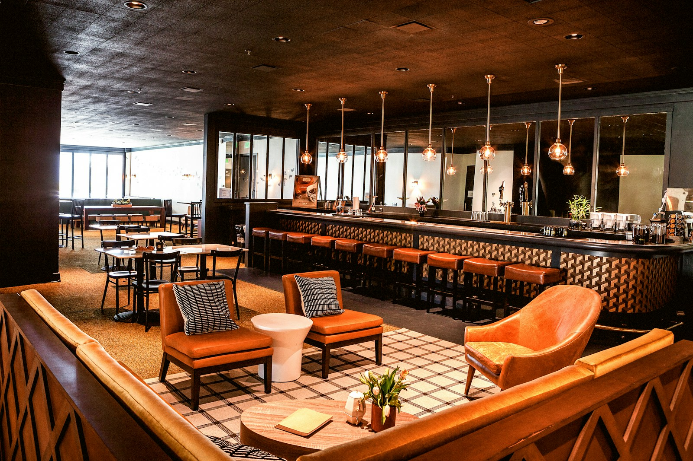

RESEARCH
Why do restaurants have live music?
What studies of restaurants and bars found about music, how long guests stay and what they spend, how loud it should be, and what's known about live music in particular.

- Music seems to change how long guests stay. In a 2024 experiment in Tel Aviv, tables stayed about 80 minutes with slow music and about 57 with fast music.
- The studies disagree on whether guests spend more. The Tel Aviv experiment found no change in the check, while some older studies, each in one restaurant, found more spending at the bar or with classical music.
- In one California restaurant, checks were larger with soft music than with loud.
- We didn't find a study that compared live music with recorded music on what a restaurant or bar takes in.
On a slow Tuesday the place is half full, and the tables finish, pay and head home. On a night with a musician in the corner, the same tables stay for another round. If you run a restaurant or a bar, you know both nights, and you’ve probably asked yourself how much of the difference is the music.
Does music keep guests longer? #
It seems to, and it’s the part the studies agree on most. In a 2024 experiment at an Italian restaurant in Tel Aviv, researchers changed the tempo of the music across 282 tables. With slow music, tables stayed about 80 minutes. With the restaurant’s usual playlist they stayed about 69, and with fast music about 57. A 1986 study in one American restaurant also found that guests stayed longer with slow music.
Whether guests like the music seems to matter more than how fast it is. In a 2002 study at a restaurant in Glasgow, how much diners liked the music predicted how long they stayed better than its tempo did.
Any sound at all seems to beat silence for keeping people at the table. When 248 people ate lunch at a Finnish cafeteria for a 2022 study, their meals lasted longer with slow music, fast music or cafeteria noise playing than in silence.
People also seem to drift toward music. In a 2018 study of a public square in Harbin, China, people walked more slowly when music was playing (by about 0.3 meters a second) and chose to sit closer to where it was coming from. Since it was a public square, it’s only a hint at what music might do for a patio or a lobby bar.
Do guests spend more with music? #
Here the studies disagree. In the Tel Aviv experiment, the check stayed the same whatever the tempo. The 1986 study reported that with slow music guests also spent more at the bar, with food spending unchanged. That was one restaurant, though, and the 2024 experiment didn’t find the extra spending. In the Glasgow study, time at the table was the best predictor of what diners spent.
The style of music may make a difference too. In a 2003 study over 18 evenings at one British restaurant, guests spent more per head with classical music playing than with pop or with no music. In another 2003 study, at a restaurant in Sydney, diners said they would pay more for a meal with jazz, pop or classical playing than with easy listening or no music. Each of those was one restaurant, and the Sydney study mostly measured what people said they’d pay.
Putting that together, whether the extra time turns into a bigger check seems to depend on whether guests have something more to order while they’re there, like drinks at the bar.
How loud should restaurant music be? #
It should be soft enough for guests to talk over. In a 2003 experiment at an oceanside restaurant in California, the check was larger when the music was soft than when it was loud, and it made no difference whether it was soft rock or classical. Researchers in restaurant acoustics recommend background music at a level two people can talk across, which they put at no more than 60 to 65 decibels. You’ll find more in a longer read on why restaurant music is so loud.
Is live music worth it for a restaurant? #
We didn’t find a study that compared live music with recorded music on what a restaurant or bar takes in, so we can’t point you to a number. In a 2019 study, an audience moved more at a live show than an audience hearing the same album played back in the same hall. That study was at a concert, though, and the researchers measured how much people moved rather than what anyone spent. Learn more about how live and recorded music compare.
A live musician can also give your regulars a reason to come back on a particular night, which no study we found has measured.
If you’d like to try it, we book solo musicians and duos for restaurants, hotel bars and lounges, for one night or for a standing night with the same musicians each time, at a level guests can talk over. A Sunday brunch is one way restaurants often start.
Sources
- Malcman, M., Azar, O. H., Shavit, T., and Rosenboim, M. (2024). How does background music affect dining duration, tips and bill amounts in restaurants? A field experiment. Behavioral Sciences. Read the source
- Milliman, R. E. (1986). The influence of background music on the behavior of restaurant patrons. Journal of Consumer Research. Read the source
- Caldwell, C., and Hibbert, S. A. (2002). The influence of music tempo and musical preference on restaurant patrons' behavior. Psychology & Marketing. Read the source
- Mathiesen, S. L., Hopia, A., Ojansivu, P., Byrne, D. V., and Wang, Q. J. (2022). The sound of silence: presence and absence of sound affects meal duration and hedonic eating experience. Appetite. Read the source
- Meng, Q., Zhao, T., and Kang, J. (2018). Influence of music on the behaviors of crowd in urban open public spaces. Frontiers in Psychology. Read the source
- North, A. C., Shilcock, A., and Hargreaves, D. J. (2003). The effect of musical style on restaurant customers' spending. Environment and Behavior. Read the source
- Wilson, S. (2003). The effect of music on perceived atmosphere and purchase intentions in a restaurant. Psychology of Music. Read the source
- Lammers, H. B. (2003). An oceanside field experiment on background music effects on the restaurant tab. Perceptual and Motor Skills. Read the source
- Rindel, J. H. (2019). Restaurant acoustics: verbal communication in eating establishments. Acoustics in Practice. Read the source
- Swarbrick, D., Bosnyak, D., Livingstone, S. R., Bansal, J., Marsh-Rollo, S., Woolhouse, M. H., and Trainor, L. J. (2019). How live music moves us: head movement differences in audiences to live versus recorded music. Frontiers in Psychology. Read the source